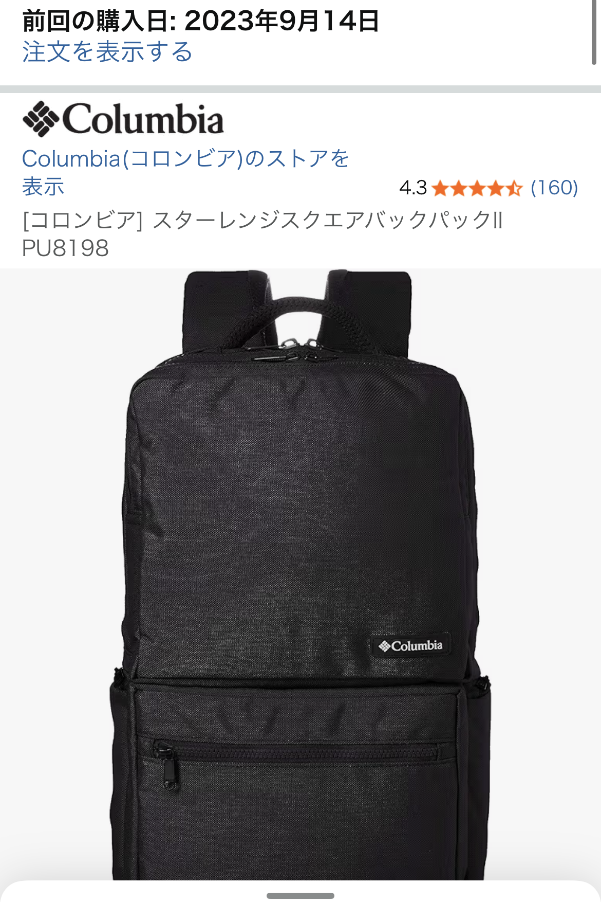

コロンビアの四角いビジネスリュックを口コミからレビュー【通勤にちょうどいいアウトドアブランド】
※本記事は実際の口コミ内容と一般的な特徴をもとに、通勤用ビジネスリュックとしての使い勝手を詳しくまとめています。

通勤で「毎日使える」コロンビアのビジネスリュックとは
アウトドアブランドのリュックは「カジュアルすぎて通勤には浮きそう」と感じる方も多いですが、 コロンビアの四角いシルエットのリュックは、ビジネスシーンでも違和感が出にくいデザインが特徴です。 実際の口コミでも「非常に良くできたリュックで通勤時に愛用」「形状が四角っぽいのでビジネスでも違和感ない」と高評価。 黒やネイビーなど落ち着いたカラーを選べば、スーツにもオフィスカジュアルにも自然になじみます。
四角いフォルムは見た目がスッキリするだけでなく、書類やノートPCを立てて収納しやすいという実用面のメリットもあります。 「通勤用にきちんと見えるリュックが欲しいけれど、アウトドアブランドの機能性も捨てがたい」というニーズに、ちょうどハマるポジションのモデルです。
アウトドアブランドらしい防水性・耐久性で雨の日も安心
口コミでは「アウトドアブランドらしく防水性、耐久性問題なし」との声があり、ここはコロンビアらしさがしっかり出ているポイントです。 生地には撥水性のある素材が使われていることが多く、ちょっとした雨なら傘との併用で中身が濡れる心配はかなり減らせます。 通勤中に突然のにわか雨に降られても、ノートPCや書類を守れる安心感は、ビジネスリュック選びで大きな加点要素です。
また、アウトドア用途も想定した作りのため、縫製やファスナー周りの強度も十分。 毎日の通勤で電車・バス・自転車などを使うと、リュックは意外とぶつけたり擦れたりしがちですが、 「耐久性に不安がない」という口コミどおり、長く使える投資として考えやすいモデルです。
ロゴは「主張しすぎず、ちゃんと見える」ちょうどいい存在感
ビジネスリュックで悩みがちなのが、ブランドロゴの主張具合です。 コロンビアのリュックは「ロゴも派手すぎないがしっかりあるので良い」という口コミの通り、 アウトドアブランドらしさを感じさせつつも、オフィスで浮かない絶妙なバランスに収まっています。
ロゴがワンポイントで入っていることで、完全な無地ビジネスバッグよりも少しだけカジュアル寄りになり、 オフィスカジュアルや私服通勤の職場では「ちょうどいい抜け感」を演出できます。 休日にそのまま街歩きや小旅行に使っても違和感がないので、「通勤とオフを1つのリュックで完結させたい」という方にも向いています。
価格は他アウトドアブランドよりも手に取りやすい
口コミでは「価格も他のアウトドアブランドと比較して安価」と評価されており、ここもコロンビアの強みです。 同じような容量・機能を持つビジネス対応リュックを、より有名なアウトドアブランドで探すと、1〜2万円台後半になることも珍しくありません。
一方、コロンビアのリュックは、アウトドアブランドとしての信頼感を保ちつつ、比較的手の届きやすい価格帯に収まっていることが多く、 「初めてビジネスリュックを買い替える」「とりあえず失敗しにくい1本が欲しい」という人にも選びやすいポジションです。 コスパ重視で選びたい方にとっては、かなり有力な候補になります。
通勤用ビジネスリュックとしておすすめできる人・できない人
- おすすめできる人：スーツでも私服でも違和感のないリュックが欲しい人
- おすすめできる人：雨の日の通勤が多く、防水性・耐久性を重視したい人
- おすすめできる人：アウトドアブランドの雰囲気は好きだが、価格は抑えたい人
- やや注意が必要な人：「完全にビジネスバッグらしい見た目」を最優先したい人
いわゆる「ザ・ビジネスバッグ」ほどかっちりした印象ではないため、金融・法律系など、 服装規定がかなり厳しい職場では、まずは職場の雰囲気を確認した方が安心です。 とはいえ、多くのオフィスカジュアル職場であれば、四角いシルエットと控えめなロゴのおかげで、違和感なく使えるはずです。
まとめ：通勤用リュックを1つ選ぶなら、コロンビアは「堅実な選択肢」
コロンビアの四角いビジネスリュックは、 「通勤で毎日使えるデザイン」と「アウトドアブランドらしい防水性・耐久性」、 そして「手の届きやすい価格」のバランスが非常に良いモデルです。 派手さよりも、長く安心して使える実用性を重視したい人にとって、かなり堅実な選択肢と言えます。
これから通勤用リュックを新調したい方や、「そろそろショルダーバッグからリュックに切り替えたい」と考えている方は、 コロンビアのビジネス対応リュックを候補に入れてみる価値は十分あります。
気になる方は、カラー展開や容量、PCスリーブの有無などをチェックしつつ、自分の通勤スタイルに合うかどうかをイメージしながら選んでみてください。
下記リンクから、コロンビアのビジネス向けリュックの詳細や最新価格を確認できます。